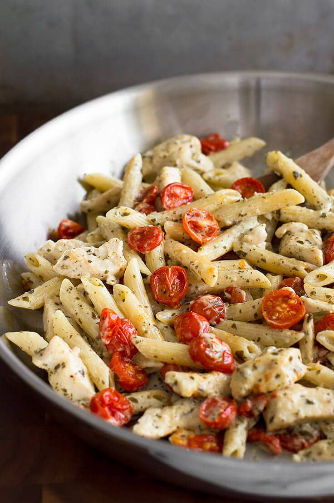

Koorene kanapasta

Koostisosad
| Koostisosa |
Kogus |
| Makaronid |
400 g |
| Kanafilee |
500 g |
| Vahukoor |
4 dl |
| Toorjuust |
100 g |
| Kirsstomatid |
200 g |
| Parmesani juust |
100 g |
| Maitseained |
Valmistamine
- Keeda makaronid, maitsesta soolaga
- Lõika kana väikesteks tükkideks
- Prae pannil kana kuldpruuniks
- Maitseta kana soola, pipra ja kanamaitseainega
- Lisa kanale juurde vahukoor
- Vähenda kuumust ning sega
- Lisa pannile ka kurnatud makaronid ning poolikud kirsstomatid
- Soovi korral maitseta veel
- Kuumuta kuni koor muutub paksuks
- Serveeri riivitud parmesani juustuga
|
Kanapasta
|